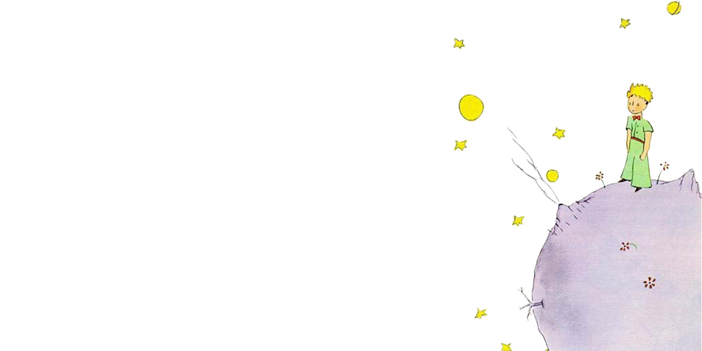
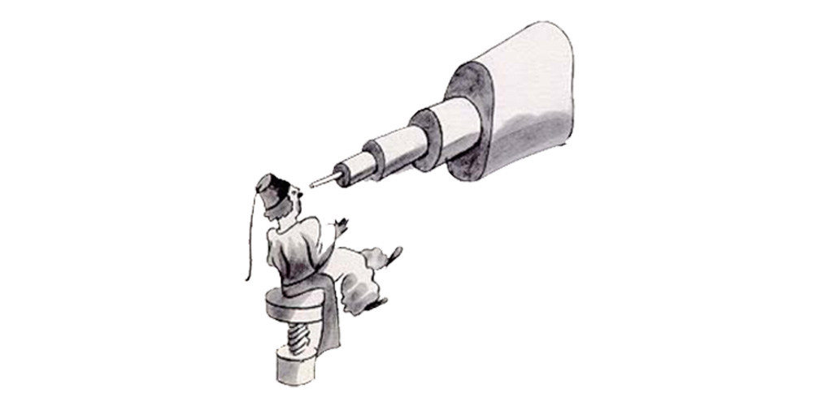
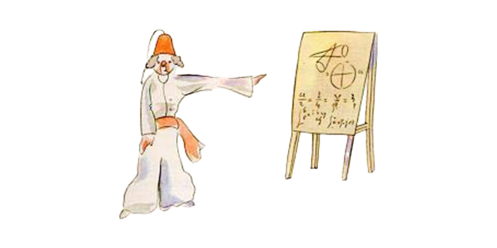
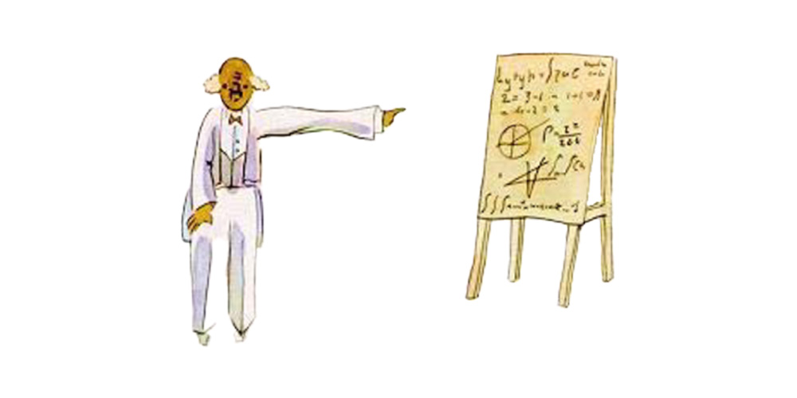

Chapter 4

I had thus learned a second fact of great importance: this was that the planet the little prince came from was scarcely any larger than a house!
But that did not really surprise me much. I knew very well that in addition to the great planets−− such as the Earth, Jupiter, Mars, Venus−− to which we have given names, there are also hundreds of others, some of which are so small that one has a hard time seeing them through the telescope. When an astronomer discovers one of these he does not give it a name, but only a number. He might call it, for example, "Asteroid 325."

I have serious reason to believe that the planet from which the little prince came is the asteroid known as B−612.
This asteroid has only once been seen through the telescope. That was by a Turkish astronomer, in 1909.

On making his discovery, the astronomer had presented it to the International Astronomical Congress, in a great demonstration. But he was in Turkish costume, and so nobody would believe what he said.
Grown−ups are like that...

Fortunately, however, for the reputation of Asteroid B−612, a Turkish dictator made a law that his subjects, under pain of death, should change to European costume. So in 1920 the astronomer gave his demonstration all over again, dressed with impressive style and elegance. And this time everybody accepted his report.
If I have told you these details about the asteroid, and made a note of its number for you, it is on account of the grown−ups and their ways. When you tell them that you have made a new friend, they never ask you any questions about essential matters. They never say to you, "What does his voice sound like? What games does he love best? Does he collect butterflies?" Instead, they demand: "How old is he? How many brothers has he? How much does he weigh? How much money does his father make?" Only from these figures do they think they have learned anything about him.
If you were to say to the grown−ups: "I saw a beautiful house made of rosy brick, with geraniums in the windows and doves on the roof," they would not be able to get any idea of that house at all. You would have to say to them: "I saw a house that cost $20,000." Then they would exclaim: "Oh, what a pretty house that is!"
Just so, you might say to them: "The proof that the little prince existed is that he was charming, that he laughed, and that he was looking for a sheep. If anybody wants a sheep, that is a proof that he exists." And what good would it do to tell them that? They would shrug their shoulders, and treat you like a child. But if you said to them: "The planet he came from is Asteroid B−612," then they would be convinced, and leave you in peace from their questions.
They are like that. One must not hold it against them. Children should always show great forbearance toward grown−up people.
But certainly, for us who understand life, figures are a matter of indifference. I should have liked to begin this story in the fashion of the fairy−tales. I should have like to say: "Once upon a time there was a little prince who lived on a planet that was scarcely any bigger than himself, and who had need of a sheep..."
To those who understand life, that would have given a much greater air of truth to my story.
For I do not want any one to read my book carelessly. I have suffered too much grief in setting down these memories. Six years have already passed since my friend went away from me, with his sheep. If I try to describe him here, it is to make sure that I shall not forget him. To forget a friend is sad. Not every one has had a friend. And if I forget him, I may become like the grown−ups who are no longer interested in anything but figures...
It is for that purpose, again, that I have bought a box of paints and some pencils. It is hard to take up drawing again at my age, when I have never made any pictures except those of the boa constrictor from the outside and the boa constrictor from the inside, since I was six. I shall certainly try to make my portraits as true to life as possible. But I am not at all sure of success. One drawing goes along all right, and another has no resemblance to its subject. I make some errors, too, in the little prince's height: in one place he is too tall and in another too short. And I feel some doubts about the color of his costume. So I fumble along as best I can, now good, now bad, and I hope generally fair−to−middling.
In certain more important details I shall make mistakes, also. But that is something that will not be my fault. My friend never explained anything to me. He thought, perhaps, that I was like himself. But I, alas, do not know how to see sheep through t he walls of boxes. Perhaps I am a little like the grown−ups. I have had to grow old.